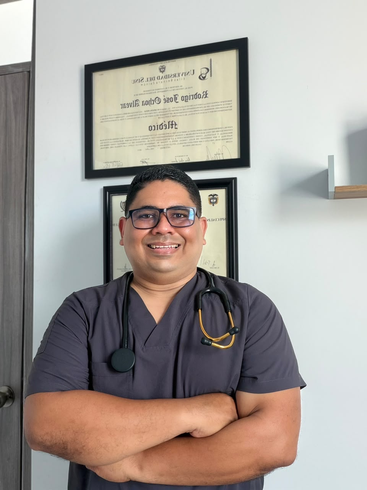

Soy el Dr. Rodrigo José Ochoa Alvear, médico general egresado de la Universidad del Sinú (Seccional Cartagena, 2016) y especialista en Gestión de la Calidad y Auditoría en Salud por la Universidad de Cartagena (2022). Mi trayectoria combina la atención asistencial directa —consulta externa, urgencias, hospitalización y programas de prevención— con la gestión administrativa y el control de calidad dentro del sistema de salud.
He ejercido en instituciones de primer, tercer y cuarto nivel de complejidad, atendiendo pacientes con patologías crónicas como diabetes e hipertensión, liderando programas de promoción y prevención, y coordinando procesos de auditoría alineados con la normatividad vigente. Mi propósito es ofrecer una atención humanizada, basada en evidencia y respaldada por procesos de calidad.
Médico General — Universidad del Sinú (2016). Especialista en Gestión de la Calidad y Auditoría en Salud — Universidad de Cartagena (2022).
Atención en instituciones de cuarto nivel de complejidad y manejo de patologías de alta demanda.
Trato cercano, empático y personalizado en cada consulta.
Experiencia en auditoría en salud, habilitación, PAMEC y programas de promoción y prevención.
Universidad del Sinú, Seccional Cartagena · 2016
Universidad de Cartagena · 2022
Consultorio habilitado ante el Ministerio de Salud de Colombia
Número de tarjeta profesional a actualizar
Universidad del Sinú, Seccional Cartagena.
ESE Hospital Local Santa Rosa de Lima.
Virrey Solís IPS, Caminos IPS, Clínica Madre Bernarda y Clínica Cartagena del Mar — manejo de patologías crónicas y urgencias de alta demanda.
Universidad de Cartagena (120 horas).
Universidad de Cartagena, con diplomado en Habilitación, PAMEC y Facturación de Cuentas de Salud (120 horas).
Centro Médico Integral Alto de la Candelaria IPS — seguimiento de pacientes crónicos, riesgo cardiovascular, obesidad y salud mental.
Hospital Universitario del Caribe, institución de cuarto nivel de complejidad.
Alcaldía de Villanueva — ejecución y control de procesos alineados con el cumplimiento normativo.
ESE Hospital Local Cartagena de Indias.
Diagnóstico clínico, manejo de farmacoterapia, registro electrónico de salud, respuesta a urgencias de alta complejidad y control de pacientes crónicos.
Auditoría en salud, normatividad de habilitación, estructuración del PAMEC y gestión de programas preventivos.
Empatía, atención humanizada, trabajo en equipo y comunicación efectiva.